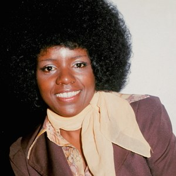

At first I was afraid, I was petrified
Kept thinking I could never live without you by my side
But then I spent so many nights thinking how you did me wrong
And I grew strong
And I learned how to get along
And so you're back
From outer space
I just walked in to find you here with that sad look upon your face
I should have changed that stupid lock, I should have made you leave your key
If I'd known for just one second you'd be back to bother me
Go on now, go, walk out the door
Just turn around now
'Cause you're not welcome anymore
Weren't you the one who tried to hurt me with goodbye
Do you think I'd crumble
Did you think I'd lay down and die?
Oh no, not I, I will survive
Oh, as long as I know how to love, I know I'll stay alive
I've got all my life to live
And I've got all my love to give and I'll survive
I will survive, hey, hey

It took all the strength I had not to fall apart
Kept trying hard to mend the pieces of my broken heart
And I spent oh-so many nights just feeling sorry for myself
I used to cry
But now I hold my head up high and you see me
Somebody new
I'm not that chained-up little person and still in love with you
And so you felt like dropping in and just expect me to be free
Well, now I'm saving all my lovin' for someone who's loving me
Go on now, go, walk out the door
Just turn around now
'Cause you're not welcome anymore
Weren't you the one who tried to break me with goodbye
Do you think I'd crumble
Did you think I'd lay down and die?
Oh no, not I, I will survive
Oh, as long as I know how to love, I know I'll stay alive
I've got all my life to live
And I've got all my love to give and I'll survive
I will survive
Oh
Go on now, go, walk out the door
Just turn around now
'Cause you're not welcome anymore
Weren't you the one who tried to break me with goodbye
Do you think I'd crumble
Did you think I'd lay down and die?
Oh no, not I, I will survive
Oh, as long as I know how to love, I know I'll stay alive
I've got all my life to live
And I've got all my love to give and I'll survive
I will survive
I will survive